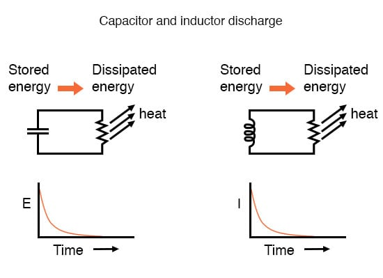
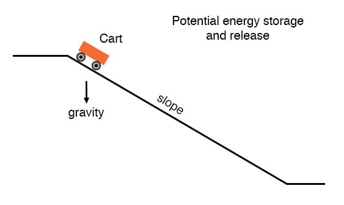
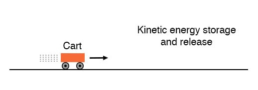

It is often perplexing to new students of electronics why the time-constant calculation for an inductive circuit is different from that of a capacitive circuit. For a resistor-capacitor circuit, the time constant (in seconds) is calculated from the product (multiplication) of resistance in ohms and capacitance in farads: τ=RC.
However, for a resistor-inductor circuit, the time constant is calculated from the quotient (division) of inductance in henrys over the resistance in ohms: τ=L/R.
This difference in calculation has a profound impact on the qualitative analysis of transient circuit response. Resistor-capacitor circuits respond quicker with low resistance and slower with high resistance; resistor-inductor circuits are just the opposite, responding quicker with high resistance and slower with low resistance.
While capacitive circuits seem to present no intuitive trouble for the new student, inductive circuits tend to make less sense.
Key to the understanding of transient circuits is a firm grasp on the concept of energy transfer and the electrical nature of it. Both capacitors and inductors have the ability to store quantities of energy, the capacitor storing energy in the medium of an electric field and the inductor storing energy in the medium of a magnetic field.
A capacitor’s electrostatic energy storage manifests itself in the tendency to maintain a constant voltage across the terminals. An inductor’s electromagnetic energy storage manifests itself in the tendency to maintain a constant current through it.
Let’s consider what happens to each of these reactive components in a condition of discharge: that is, when energy is being released from the capacitor or inductor to be dissipated in the form of heat by a resistor:

In either case, heat dissipated by the resistor constitutes energy leaving the circuit, and as a consequence the reactive component loses its store of energy over time, resulting in a measurable decrease of either voltage (capacitor) or current (inductor) expressed on the graph. The more power dissipated by the resistor, the faster this discharging action will occur, because power is by definition the rate of energy transfer over time.
Therefore, a transient circuit’s time constant will be dependent upon the resistance of the circuit. Of course, it is also dependent upon the size (storage capacity) of the reactive component, but since the relationship of resistance to a time constant is the issue of this section, we’ll focus on the effects of resistance alone. A circuit’s time constant will be less (faster discharging rate) if the resistance value is such that it maximizes power dissipation (rate of energy transfer into heat).
For a capacitive circuit where stored energy manifests itself in the form of a voltage, this means the resistor must have a low resistance value so as to maximize current for any given amount of voltage (given voltage times high current equals high power). For an inductive circuit where stored energy manifests itself in the form of a current, this means the resistor must have a high resistance value so as to maximize voltage drop for any given amount of current (given current times high voltage equals high power).
This may be analogously understood by considering capacitive and inductive energy storage in mechanical terms. Capacitors, storing energy electrostatically, are reservoirs of potential energy. Inductors, storing energy electromagnetically (electrodynamically), are reservoirs of kinetic energy.
In mechanical terms, potential energy can be illustrated by a suspended mass, while kinetic energy can be illustrated by a moving mass. Consider the following illustration as an analogy of a capacitor:

The cart, sitting at the top of a slope, possesses potential energy due to the influence of gravity and its elevated position on the hill. If we consider the cart’s braking system to be analogous to the resistance of the system and the cart itself to be the capacitor, what resistance value would facilitate rapid release of that potential energy?
Minimum resistance (no brakes) would diminish the cart’s altitude quickest, of course! Without any braking action, the cart will freely roll downhill, thus expending that potential energy as it loses height. With maximum braking action (brakes firmly set), the cart will refuse to roll (or it will roll very slowly) and it will hold its potential energy for a long period of time. Likewise, a capacitive circuit will discharge rapidly if its resistance is low and discharge slowly if its resistance is high.
Now let’s consider a mechanical analogy for an inductor, showing its stored energy in kinetic form:

This time the cart is on level ground, already moving. Its energy is kinetic (motion), not potential (height). Once again if we consider the cart’s braking system to be analogous to circuit resistance and the cart itself to be the inductor, what resistance value would facilitate rapid release of that kinetic energy?
Maximum resistance (maximum braking action) would slow it down quickest, of course! With maximum braking action, the cart will quickly grind to a halt, thus expending its kinetic energy as it slows down. Without any braking action, the cart will be free to roll on indefinitely (barring any other sources of friction like aerodynamic drag and rolling resistance), and it will hold its kinetic energy for a long period of time.
Likewise, an inductive circuit will discharge rapidly if its resistance is high and discharge slowly if its resistance is low.
Hopefully this explanation sheds more light on the subject of time constants and resistance, and why the relationship between the two is opposite for capacitive and inductive circuits.